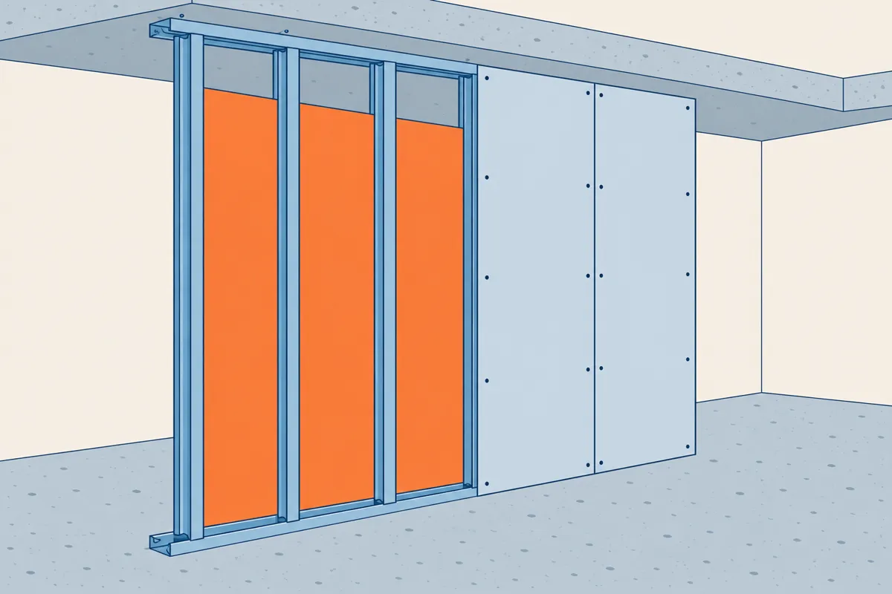

⬅ La ligne Lire les plans · Plâtrerie et isolation
Une cloison rate le plus souvent aux jonctions, là où votre ouvrage rencontre le sol, le plafond ou une porte. Le dossier les dessine dans les plans de détail.
Environ 2 heures, règle graduée en main. À la fin, vous saurez :
Comment travailler. Lisez les écrans 2 à 9 : chaque geste a sa méthode et un exemple résolu sur la cloison C2 d'un bureau. Faites ensuite l'exercice sur la cloison C1 du vestiaire : chaque question dit l'écran à relire. La leçon existe aussi sur papier, avec les mêmes numéros d'écran (bouton « Leçon (PDF) » en haut de la gare).

Le détail dessine en coupe les pièces de cette cloison en cours de montage : rails, montants, isolant, plaques.
Un détail est presque toujours une coupe à grande échelle, au 1/10 ou au 1/5. L'échelle est écrite sous le dessin. Au 1/5, 1 mm sur le papier vaut 5 mm en vrai.
Le trait fort montre ce qui est coupé : les plaques, les rails. Les vagues montrent l'isolant. Deux traits en zigzag montrent que le milieu de la cloison n'est pas dessiné.
L'ossature d'une cloison est faite des rails et des montants. Pour légender sa coupe, lisez-la de haut en bas, puis des côtés vers le milieu.
C2 sépare un bureau de ses sanitaires. C'est une cloison 98/48 : deux plaques sur chaque face.
1 : plaque, le trait fort sur le côté. 2 : rail haut, le U fixé sous le plafond. 3 : isolant, les vagues. 4 : montant, en gris derrière l'isolant. 5 : rail bas, le U fixé sur le sol.
Imprimé à 100 %, le détail de l'exercice est à sa vraie échelle : il se mesure à la règle.
La désignation donne deux nombres en millimètres : l'épaisseur annoncée de la cloison, puis la largeur des rails et des montants. L'épaisseur réelle se calcule : ossature + plaques. Une cloison 72/48 mesure en vrai 48 + 12,5 + 12,5 = 73 mm.
Sur le détail de C2 à sa vraie échelle, les deux plaques d'une face mesurent 5 mm à la règle. En vrai : 5 × 5 = 25 mm, soit 2 plaques de 12,5 mm.
L'épaisseur totale mesure un peu plus de 19,5 mm à la règle : 19,6 mm. En vrai : 19,6 × 5 = 98 mm.
Contrôle : 48 + 4 × 12,5 = 98 mm. La mesure et la désignation 98/48 concordent.
Le dessin de C2 change de taille avec l'écran : les mesures de l'exemple sont donc écrites. Lisez la règle au millimètre, puis estimez à l'œil entre deux traits. L'exercice tolère 1 mm d'écart sur le papier, soit 5 mm en vrai au 1/5.
Le détail donne aussi le mode opératoire. Vous y lisez les pièces, puis vous en tirez l'ordre de pose : d'abord ce qui porte, ensuite ce qui ferme.
1, les rails R48 au sol et au plafond. 2, les montants M48 dans les rails. 3, la face côté bureau : une plaque, puis la seconde vissée par-dessus, ses joints décalés par rapport à la première. 4, l'isolant entre les montants. 5, la face côté sanitaires, en deux plaques.
L'huisserie est le cadre de la porte. La baie est l'ouverture qui la reçoit. Le détail de la baie donne deux informations.
La cote de la porte est celle du vantail, la partie qui s'ouvre. La réservation est plus grande. Dans ces exercices, cet écart s'appelle le jeu. Il reçoit l'huisserie : il sert à la poser, à la régler d'aplomb (bien droite) et à la caler (la bloquer avec des cales). Les cotes s'écrivent largeur × hauteur, en millimètres.
Le détail de la baie de C2 indique : porte 830 × 2040, réservation 900 × 2060 (données de l'exemple).
Jeu en largeur : 900 − 830 = 70 mm. Jeu en hauteur : 2060 − 2040 = 20 mm.
Autour de la baie, le détail de C2 montre des montants doublés : c'est le renfort.
La réservation se lit sur le détail ou sur la notice du fabricant de la porte.
Sur le plan de niveau, la porte est dessinée ouverte : un trait pour le vantail, un quart de cercle pour son mouvement.
Sur le plan du bureau imprimé au 1/50, le trait du vantail de la porte de C2 mesure 16,6 mm à la règle. En vrai : 16,6 × 50 = 830 mm, la porte de 830 de l'écran 6.
Au 1/50, 1 mm d'erreur à la règle donne 50 mm d'erreur en vrai : estimez à l'œil entre deux traits. Le plan de cet écran change de taille avec l'écran : la mesure de l'exemple est donc écrite.
Un grand bâtiment bouge. Un joint de dilatation, noté JD, coupe exprès sa structure en deux. S'il traverse le plan de niveau, il traverse vos cloisons et vos plafonds. Au droit du JD, c'est-à-dire à l'endroit où il passe :
Sur un autre chantier, un JD traverse la cloison d'un couloir. Un élève écrit en deux phrases : « La cloison est coupée au droit du JD, avec une ossature de chaque côté et un profil souple entre les deux. Une cloison continue fissurerait au premier mouvement du bâtiment. »
Pour expliquer par écrit, dites ce que l'on fait, puis sa raison avec « car » ou dans une seconde phrase. Exemple sur un autre cas : « Les rails se posent en premier, car les montants s'emboîtent dedans. »
Devant un détail, cherchez dans l'ordre : où il est (le cercle repère du plan, gare 4), ses couches, l'ordre de pose, ses cotes.
| Étape | Geste | Écran |
|---|---|---|
| 1 | Lire l'échelle du détail ; passer du papier au vrai | 2 |
| 2 | Nommer rails, montant, plaques, isolant | 3 |
| 3 | Mesurer à la règle, × 5 ; contrôler avec la désignation | 4 |
| 4 | Écrire l'ordre de pose | 5 |
| 5 | Calculer le jeu : réservation − porte ; dire le renfort | 6 |
| 6 | Mesurer la porte sur le plan, × 50 | 7 |
| 7 | Traiter un JD ; l'expliquer en deux phrases | 8 |
Écrivez chaque calcul en entier, avec son unité : 900 − 830 = 70 mm.
Répondez à tout, votre score s'affiche en bas.
Rails, huisseries, joints de dilatation : les points singuliers du plaquiste se lisent dans les détails, et le détail donne l'ordre de pose.
Télécharger la leçon papier (PDF) Télécharger l'exercice papier (PDF)
Pour l'enseignant, le corrigé est dans l'espace enseignant, sous code. L'exercice fait légender et mesurer le détail de la cloison C1 au 1/5, déduire l'ordre de pose, lire la réservation de sa porte, la mesurer sur le plan du vestiaire et répondre sur un joint de dilatation.
Gare suivante : Plâtrerie 4, le BIM du plaquiste.